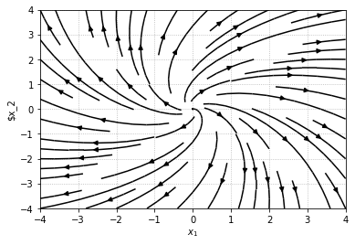

被控对象的行为
准备工作
为了更加方便地绘制相关图像,在这里要进行相应的准备工作
1 | import matplotlib.pyplot as plt |
绘图时用以确定线条类型
1 | def line_generator(): |
用以完善绘图
1 | def plot_set(fig_ax,*args): |
用以完善伯德图函数
1 | def bodeplot_set(fig_ax,*args): |
时域响应
在这一部分,我们选取常见的阶跃函数step对于一阶和二阶的滞后系统进行描述
一阶滞后系统
之前用来描述有阻尼手推车系统的传递函数的传递函数为
可以将$\frac{1}{\mu}$简化为增益$K$,$\frac{M}{\mu}$简化为时间常数$T$,
这一类系统的阶跃响应可以被表示为
1 | ts,k=0.5,1 |
其中,我们需要注意到,$T$代表系统达到稳定值的63.2\%所需要的时间.
下面展示了在不同的$T$下系统的变化
1 | ls=line_generator() |
可以明显看出$T$越大,达到平衡就越慢,$K$为增益,在这里不再加以演示了
二阶滞后系统
如果考量一个阻尼弹簧的模型,我们可以得到其传递模型为
式中$\zeta$被称为阻尼系数,$\omega_n$被称为无阻尼自然频率.
这样的系统被称为二阶滞后系统
实际上就是阻尼振动(LCR振荡的模型)
1 | zeta,omega0=0.4,5 |
可以注意到响应图象呈现先增大后减小(中间存在过冲)过冲在二阶滞后系统时有发生.
下面展现出过冲在不同的阻尼系数下的表现
1 | ls=line_generator() |
可以注意到随着$\zeta$增加,过冲逐渐减小,乃至消失,而不同的$\omega_n$的影响可以如下图所示
1 | ls=line_generator() |
可见$\omega_n$不会改变响应的大小,只会改变响应速度
下面展现了一个高阶响应系统的阶跃响应
1 | p=tf([0,1],[1,2,3,1]) |
状态空间模型的时域响应
在状态空间模型中,我们还会考虑不同的初始值会给出什么样不同的结果
状态空间模型(单输入,单输出)定义
我们考虑一个系统,其中$A=\left[\begin{matrix}0&1\-4&-5\end{matrix}\right],B=\left[\begin{matrix}0\\1\end{matrix}\right],C=\left[\begin{matrix}1&0\\0&1\end{matrix}\right],D=\left[\begin{matrix}0\\0\end{matrix}\right]$,为了便于观察中间状态的行为,将$C$设定为单位阵
而在Python中,可以利用initial函数获得系统对于初值的响应
1 | A=[[0,1],[-4,-0.5]] |
可以注意到,两个状态(分别对应于阻尼运动的位置和速度)最终都会趋向0,这是阻尼运动的特征
对于一个微分方程$\dot{x}(t)=ax(t)$,其具有解$x(t)=e^{at}x(0)$,而将$a$替换为矩阵$\mathrm{A}$可以得到状态方程的解为
如果可以计算出这个指数,那么就可以得到状态方程的行为特征
1 | import scipy.linalg |
array([[ 0.05345953, 0.03466486],
[-0.13865943, 0.0361271 ]])
接下来我们考虑具有输入的情况,利用下面的求解公式
其中右边第一项为零输入响应,第二项为零初值响应
接下来来看一下之前函数$x=\left[\begin{matrix}0\\0\end{matrix}\right]$时的零初值响应,输入为阶跃输入
1 | Td=np.linspace(0,20,1000) |
我们可以进一步将之前的零输入响应添加进去,只要将两者相加即可,或者使用lsim
1 | Td=np.linspace(0,20,1000) |
下面我们可以稍稍修改一下代码,实现$u(t)=3\sin 5t,x(0)=[0.5,1]^T$时系统响应
对于一般的响应,建议还是使用
lsim实现
1 | Td=np.linspace(0,20,1000) |
稳定性
在研究系统工作时,我们发现一部分值可能会导致系统发散,即系统不稳定,我们需要研究系统的稳定性取决于哪些因素
输入输出稳定性
如果输入信号有界,输出也有界,这种情况被称作输入输出稳定(BIBO稳定)
判断不稳定的方法
观察传递函数$\mathcal{P}(s)$的极点(其中代数式达到无穷的情况)
在python中可以使用pole函数寻找到传递函数的极点
1 | P1=tf([0,1],[1,1]) |
P1: [-1.+0.j]
接下来看看二阶滞后函数中$K=1,\omega_n=1,\zeta=0.025$时的传递函数的极点
1 | P2=tf([0,1],[1,0.05,1]) |
P2: [-0.025+0.99968745j -0.025-0.99968745j]
系统处于输入输出稳定条件为:传递函数的所有极点实部均为负数
实部为负值的极点为稳定极点,否则为不稳定极点
渐进稳定性
前面介绍的是相对于传递函数而言的,现在讨论状态空间模型,可以通过观察系统的A矩阵的特征值实现对稳定性的观测,则有:
系统稳定的充分必要条件:矩阵A所有特征值的实部均为负数
但是同时需要注意到的是这里的稳定性具有渐进的特性即
如果具有渐进稳定性,那么对于有界输入,存在有界输出(逆命题不成立)
使用np.linalg.eigvals可以求得矩阵的特征值
1 | A=np.array([[0,1],[-4,-5]]) |
array([-1., -4.])
而通过绘制相平面图(即状态$x$的演化轨迹)如下代码所示
1 | def make_phase(matA,w=1.5): |
先来刚刚那个矩阵
1 | make_phase(A,w=4) |
[-1. -4.]
可以注意到,所有的箭头都指向不动线的,下面展示如果特征值大于零会如何
1 | make_phase(np.array([[0,1],[1,4]]),w=4) |
[-0.23606798 4.23606798]
还有没有实数特征值的
1 | make_phase(np.array([[np.cos(0.5),np.sin(0.5)],[-np.sin(0.5),np.cos(0.5)]]),w=4) |
[0.87758256+0.47942554j 0.87758256-0.47942554j]

这些极点和系统行为密切相关,若极点负值越大,那么响应越迅速
当极点的虚部不为零时,会出现振荡,虚部越大振荡越快
观察实部,可以得到振荡振幅;观察虚部,可以得到振荡周期
频域响应
当输入为冲激输入(函数形式为$\delta$函数)时,系统的响应就是传递函数,因此只需要对施加冲激输入后的系统响应进行拉普拉斯变换就可以得到传递函数
但是在现实状况下,实现冲激输入非常困难,因此我们需要对信号进行傅里叶变换,研究输入输出的频域响应得到结果
我们可以观察二阶滞后系统在输入正弦波时的响应
1 | fig,ax=plt.subplots(2,2) |
C:\Users\h\AppData\Roaming\Python\Python39\site-packages\control\timeresp.py:935: UserWarning: return_x specified for a transfer function system. Internal conversion to state space used; results may meaningless.
warnings.warn(
C:\Users\h\AppData\Roaming\Python\Python39\site-packages\control\timeresp.py:935: UserWarning: return_x specified for a transfer function system. Internal conversion to state space used; results may meaningless.
warnings.warn(
C:\Users\h\AppData\Roaming\Python\Python39\site-packages\control\timeresp.py:935: UserWarning: return_x specified for a transfer function system. Internal conversion to state space used; results may meaningless.
warnings.warn(
C:\Users\h\AppData\Roaming\Python\Python39\site-packages\control\timeresp.py:935: UserWarning: return_x specified for a transfer function system. Internal conversion to state space used; results may meaningless.
warnings.warn(
<matplotlib.legend.Legend at 0x1aa4e6be160>
可以注意到随着频率逐渐增大,振幅逐渐减小,同时相位的滞后就会比较大
对于各个频率,振幅比以$20\log_10\frac{B(\omega)}{A}$(分贝,dB)表示,绘制出图象为幅频图
将相位(deg)绘出的图形称为相频图,两者合称伯德图
可以使用
bode获得伯德图(记得转换)
一阶滞后系统的频域响应
下面我们来研究一阶滞后系统的伯德图,我们分别取时间常数$T=1,0.5,0.1$
1 | K=1 |
C:\Users\h\AppData\Roaming\Python\Python39\site-packages\control\freqplot.py:187: FutureWarning: 'Plot' keyword is deprecated in bode_plot; use 'plot'
warnings.warn("'Plot' keyword is deprecated in bode_plot; use 'plot'",
C:\Users\h\AppData\Roaming\Python\Python39\site-packages\control\freqplot.py:187: FutureWarning: 'Plot' keyword is deprecated in bode_plot; use 'plot'
warnings.warn("'Plot' keyword is deprecated in bode_plot; use 'plot'",
C:\Users\h\AppData\Roaming\Python\Python39\site-packages\control\freqplot.py:187: FutureWarning: 'Plot' keyword is deprecated in bode_plot; use 'plot'
warnings.warn("'Plot' keyword is deprecated in bode_plot; use 'plot'",
可以注意到,随着频率的提高,输出信号会发生衰减和相移,时间常数$T$越大,衰减和相移越为明显
这很好理解,时间常数越大,代表响应越慢,自然衰减和相移就大
一般可以认为,在$\frac{1}{T}$的范围之内,输入信号振幅与输出信号相似(此时相移45°)
二阶滞后系统的频域响应
在这一部分,我们来研究一下二阶滞后系统的频域响应,取阻尼系数$\zeta=1,0.7,0.4$
1 | zeta=[1,0.7,0.4] |
C:\Users\h\AppData\Roaming\Python\Python39\site-packages\control\freqplot.py:187: FutureWarning: 'Plot' keyword is deprecated in bode_plot; use 'plot'
warnings.warn("'Plot' keyword is deprecated in bode_plot; use 'plot'",
C:\Users\h\AppData\Roaming\Python\Python39\site-packages\control\freqplot.py:187: FutureWarning: 'Plot' keyword is deprecated in bode_plot; use 'plot'
warnings.warn("'Plot' keyword is deprecated in bode_plot; use 'plot'",
C:\Users\h\AppData\Roaming\Python\Python39\site-packages\control\freqplot.py:187: FutureWarning: 'Plot' keyword is deprecated in bode_plot; use 'plot'
warnings.warn("'Plot' keyword is deprecated in bode_plot; use 'plot'",
通过观察伯德图,我们可以得到在高频段振幅会逐渐减小,虽然在较高频下振幅的衰减与$\zeta$无关,但是如果$\zeta$较低,会出现过冲(类似于共振)
相位在二姐滞后系统最终会移相180°
我们再来看看改变频率$\omega_n$的结果
1 | zeta=0.5 |
C:\Users\h\AppData\Roaming\Python\Python39\site-packages\control\freqplot.py:187: FutureWarning: 'Plot' keyword is deprecated in bode_plot; use 'plot'
warnings.warn("'Plot' keyword is deprecated in bode_plot; use 'plot'",
C:\Users\h\AppData\Roaming\Python\Python39\site-packages\control\freqplot.py:187: FutureWarning: 'Plot' keyword is deprecated in bode_plot; use 'plot'
warnings.warn("'Plot' keyword is deprecated in bode_plot; use 'plot'",
C:\Users\h\AppData\Roaming\Python\Python39\site-packages\control\freqplot.py:187: FutureWarning: 'Plot' keyword is deprecated in bode_plot; use 'plot'
warnings.warn("'Plot' keyword is deprecated in bode_plot; use 'plot'",
可以注意到,随着$\omega_n$的增大,其相移和衰减的程度都下降了,而在固有频率处,刚好相移为90°
1 | P=tf([1,3],[1,3,2]) |